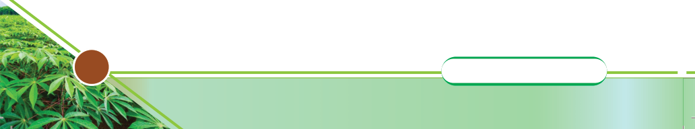

Activity 5.9
Visit the nearby market and perform the following tasks:
(a) Identify the products of round potato present in the market and compare
their prices;
(b) Read the labels of different potato products packaging materials and
summarise the information provided;
(c) Conclude the best potato product that can give higher benefit compared
to others; then,
(d) Summarise your observations and share in class.
In your portfolio, summarise what you have learnt from this chapter.